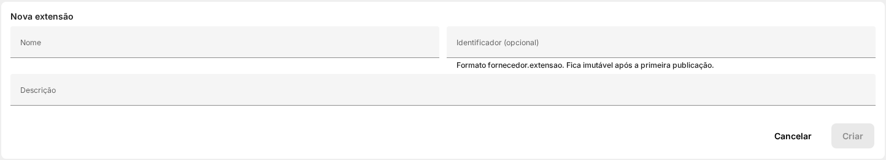
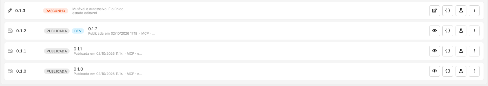

Extensões: Bastidores do Projeto
Como este material foi produzido: as fontes de verdade, o método de investigação, o teste do ciclo de vida, as armadilhas encontradas e as regras de ouro. Serve como roteiro reaproveitável para entender e documentar qualquer módulo da plataforma.
1. O ponto de partida
A dúvida que originou tudo: um usuário Administrador enxerga a tela de Extensões, um superusuário enxerga a tela de Extensões instaladas, e sem um acesso de superusuário na própria instância ficava a pergunta: como o Administrador cria as extensões?
A resposta não estava em nenhum lugar só. Foi preciso cruzar várias fontes — e provar fazendo.
2. As fontes de verdade (a ordem importa)
- A instância ao vivo. A única fonte que não mente. Consultamos a API de configuração da própria plataforma e descobrimos quem o chamador é (um perfil interno de superusuário) — o que explica por que a integração consegue fazer o que o Administrador não consegue.
- A lista de ferramentas da plataforma. Ao separá-las por assunto, ficou evidente que existem duas famílias: uma de autoria (editor) e outra de instalação. Só esse fato já provava que criar e instalar são coisas distintas.
- A interface gráfica real. Entrar como Administrador e olhar os menus mostrou que o item Extensões abre o editor; tentar abrir a tela de instalações resulta em redirecionamento — não é "escondido", é proibido.
- A documentação que o produto carrega dentro de si. A aplicação web baixa no navegador o próprio manual do desenvolvedor. Ali está a frase decisiva: a administração de extensões é exclusiva de superusuário, e um Administrador comum recebe 403 inclusive para leitura.
- Os dados reais. O que já existia na instância (extensões no editor, instalações, ponteiros) confirmou o modelo: um mesmo aplicativo, várias instalações independentes.
3. O modelo mental que resolve a confusão
Pense numa loja de aplicativos: o aplicativo existe uma vez só na loja (global); cada aparelho que instala tem a sua cópia, com os seus dados (local).
| Papel | Tela | Quem |
|---|---|---|
| Autorar (criar/publicar) | Editor de Extensões | Administrador |
| Instalar (configurar/ligar/remover) | Extensões Instaladas | Somente superusuário |
| Distribuir em várias empresas | Painel do parceiro | Parceiro |
O que é global: o aplicativo e o seu identificador único. O que é local: a instalação (público, configuração, chave e dados). A mesma extensão instalada em duas empresas são duas instalações separadas.
4. O teste do ciclo de vida (do zero ao uso)
Para não ficar na teoria, executamos a vida inteira de uma extensão de exemplo, com provas em cada etapa:
- Completar o rascunho — gravar o arquivo de tela e o manifesto.
- Publicar a versão — o artefato vai para o CDN e fica imutável.
- Apontar o canal de teste (dev) e instalar para um público restrito.
- Conferir na tela — aqui surgiu a primeira lição: um painel de atendimento só aparece para quem atende chats.
- Acrescentar um item de barra superior (visível para todos) — nova versão, novo ponteiro, e o item apareceu.
- Apontar produção — o endereço público passou a servir a versão nova.
- Desmontar — remover a instalação e apagar a extensão (com a lição de que apagar a extensão não remove as instalações).


5. Armadilhas do produto
id (fornecedor.extensao): mudar depois = apagar e recriar.author é objeto, não texto. { "name": "..." }. Texto solto é recusado.icon é arquivo, não nome de ícone do sistema. Ou aponte para um arquivo da extensão, ou omita (gera aviso, não erro).url citado tem de existir. Arquivo ausente = publicação recusada.6. Armadilhas da infraestrutura
7. Armadilhas do projeto do manual
8. Tropeços que cometemos (para você não repetir)
- Procurar a coisa errada no teste. Um item de extensão é um link, não um botão: procurar botão dá "não existe" e leva a conclusão errada. Quando o teste dá negativo, desconfie primeiro do teste.
- Achar que "não apareceu" era falha da extensão. Era o filtro de público.
- Publicar sem ter salvado o manifesto. Sempre confira se o passo anterior deu certo antes de seguir.
- Esquecer a confirmação na remoção. Ler a mensagem de erro resolve — ela diz exatamente o que falta.
- Deixar o conteúdo de exemplo duplicar numa captura. Revise a saída antes de fotografar.
9. Como o material foi feito
- Estudo do estilo — replicar a estrutura e as classes das páginas existentes.
- Redação — problema, papéis, conceitos, fluxo, armadilhas, dúvidas comuns.
- Capturas reais — automação do navegador, recortes precisos, sem dado sensível.
- Registro no menu — lista do script, card na página inicial, README.
- Geração — executar o script que reescreve o cabeçalho, cria o índice e atualiza a busca.
- Verificação — abrir localmente, conferir imagens, busca e âncoras.
- Publicação — commitar e enviar (push).
10. Como testamos (método reaproveitável)
- Verificações estáticas: todo link/imagem aponta para arquivo existente? Há dependência externa indevida? Toda página recebeu o menu? A busca indexou?
- Teste funcional: subir um servidor local e abrir num navegador de verdade — card na página inicial, imagens, busca por palavra, clique no índice, item ativo no menu.
- Teste decisivo: abrir o guia avulso com a rede desligada.
- Encerrar o servidor de teste — não deixar processo pendurado.